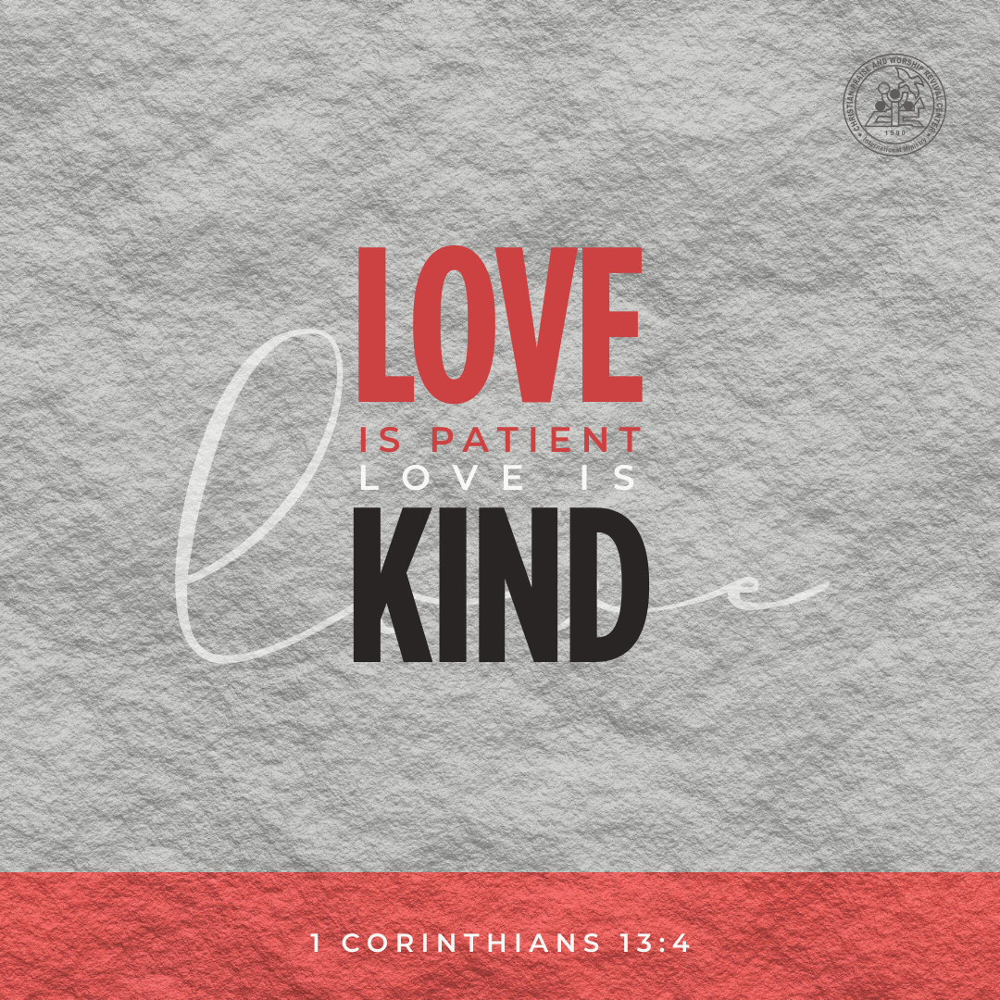
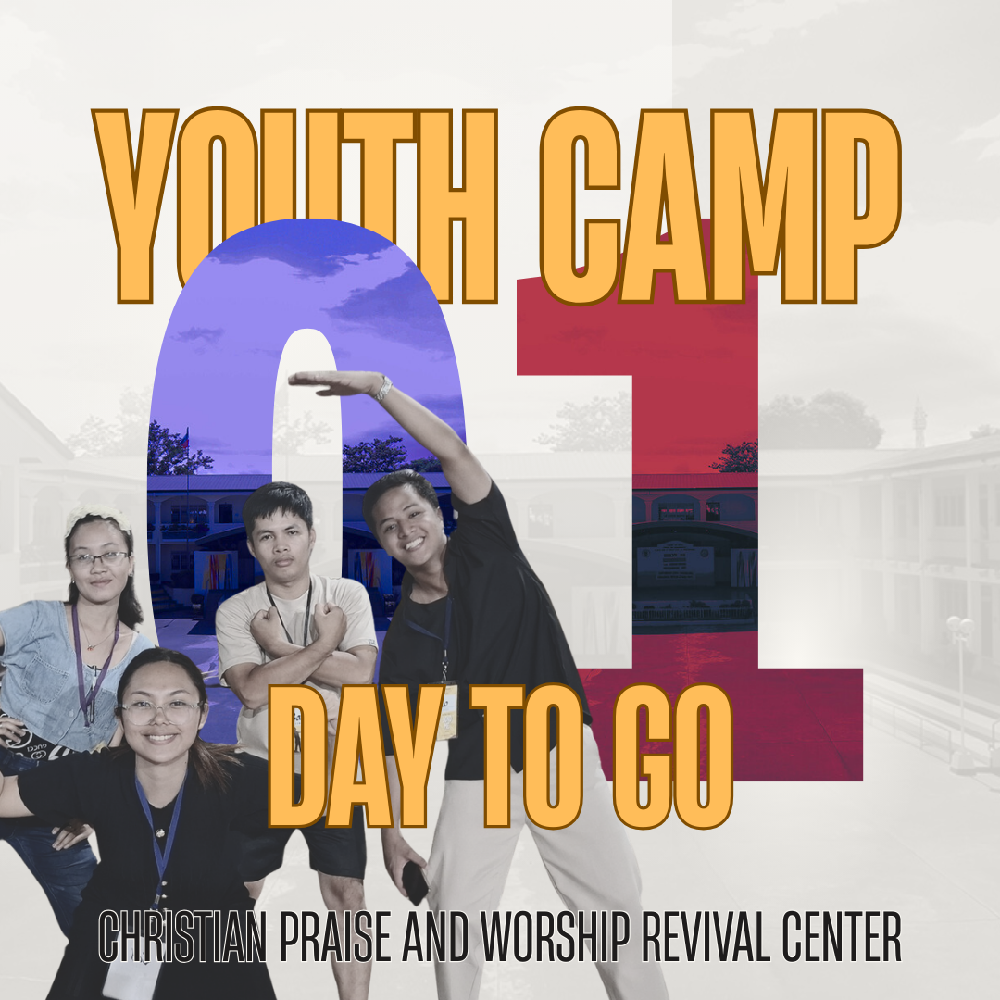
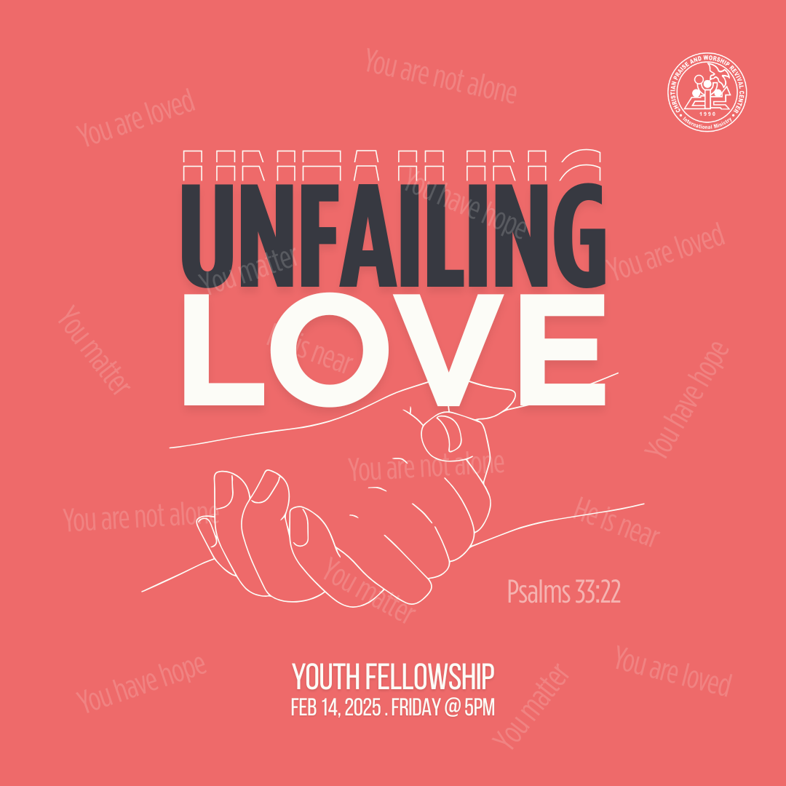

CPWRCIM — content operations system
A repeatable content pipeline — planning, production, publishing, monitoring, and reporting — covering graphics, video, thumbnails, and livestream support.

THE CHALLENGE
Consistent publishing was falling apart without a real process — content went out ad-hoc, with no calendar, no consistent editing standard, and no reporting to know what was actually working.
THE APPROACH
-
01
Content calendar
Built a planning system so every piece of content had a slot, a purpose, and an owner.
-
02
Production pipeline
Standardized graphics, video editing, and thumbnail production so output stayed consistent.
-
03
Monitoring & reporting
Set up regular analytics reporting to track what was working and adjust the plan accordingly.
THE WORK, IN SCREENSHOTS
GRAPHICS & VIDEO SAMPLES



THE RESULT
A repeatable content operation instead of ad-hoc posting — consistent output, with visibility into what's actually performing.